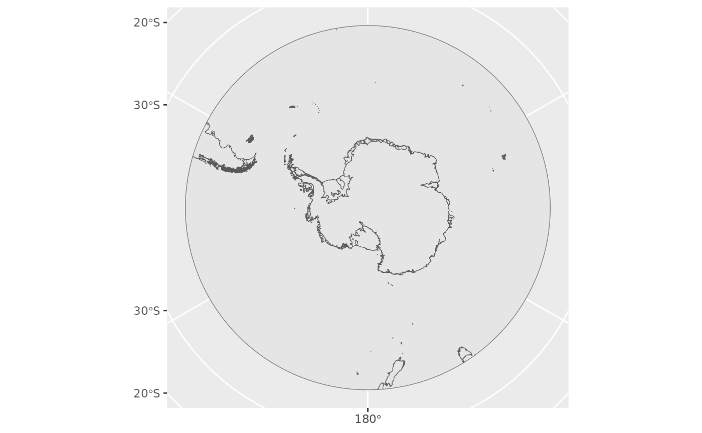

Introduction to quantarticR
intro.RmdOverview
The quantarcticR package provides access to Quantarctica
data sets for R users, without needing QGIS to be
installed.
This vignette:
- explains what Quantarctica data is
- shows how the datasets can be used in R
- provides examples of how you can work with them
What is Quantarctica?
Quantarctica is a collection of Antarctic geographical datasets which works with the free, cross-platform, open-source software QGIS. It includes community-contributed, peer-reviewed data from ten different scientific themes and a professionally-designed basemap.
Quantarctica is is published and made available under under a Creative Commons Attribution 4.0 International License.
If you use it, please cite it:
Matsuoka K, Skoglund A, Roth G (2018) Quantarctica
dataset. Norwegian Polar Institute. https://doi.org/10.21334/npolar.2018.8516e961
In addition, published works produced using Quantarctica are asked to cite each dataset that was used in the work. Please consult the abstract of each data set for the relevant citation.
Caching datasets
The quantarcticR R package provides you with flexibility to either temporarily or persistently store the data that is downloaded from Quantarctica. By default a temporary directory is used, which will only persist for the current R session. This means that data will not be re-used from session to session, and you may end up re-downloading the same data if you run the same script in different sessions.
You can instead choose to save the data to a persistent directory, by
issuing the command qa_cache_dir("persistent") after
loading the quantarcticR package. This will use a standard
user data directory (e.g. under the user’s AppData
directory on Windows operating systems). You could also specify a
particular directory to use, if you prefer:
qa_cache_dir("c:/my/data/directory/")You can switch cache directories at any time, and you can find out
the current cache directory by calling qa_cache_dir() with
no arguments.
Quantarctica Data Sets
Start by loading the package:
library(quantarcticR)In order to return a list of the datasets available, use the
qa_datasets function.
datasets <- qa_datasets()
head(datasets)## # A tibble: 6 × 5
## layername main_file type cached download_size
## <chr> <chr> <chr> <lgl> <fs::bytes>
## 1 Overview place names /tmp/Rtmp9dbOW… shap… FALSE 19.74K
## 2 COMNAP listed facilities /tmp/Rtmp9dbOW… shap… FALSE 691.92K
## 3 Subantarctic stations /tmp/Rtmp9dbOW… shap… FALSE 691.92K
## 4 SCAR Composite gazetteer /tmp/Rtmp9dbOW… shap… FALSE 329.05M
## 5 IBO-IOC GEBCO Features (point) /tmp/Rtmp9dbOW… shap… FALSE 1.25M
## 6 IBO-IOC GEBCO Features (multipoint) /tmp/Rtmp9dbOW… shap… FALSE 1.25MIn the datasets object we can see the following:
-
layernamewhich is the name of the dataset -
main_fileis the primary data file associated with each dataset -
typewhich is the object type (currently “shapefile” or “raster”) -
cachedwhether it has been downloaded to the local cache or not -
download_sizewhich is the size of the dataset.
Dataset details
In order to view the details of a dataset use the
qa_dataset function. This function gives more information
about the dataset (but does not download or return the actual data). For
example, with the simple basemap called “ADD Simple basemap”:
basemap <- qa_dataset("ADD Simple basemap")
basemap## Rows: 1
## Columns: 12
## $ layername <chr> "ADD Simple basemap"
## $ datasource <chr> "Miscellaneous/SimpleBasemap/ADD_DerivedLowresBasemap…
## $ layer_attributes <list> <NULL>
## $ srs_attributes <list> [<tbl_df[1 x 4]>]
## $ provider <chr> "ogr"
## $ abstract <chr> NA
## $ extent <list> <NULL>
## $ palette <list> <NULL>
## $ type <chr> "shapefile"
## $ download_size <fs::bytes> 2M
## $ main_file <chr> "/tmp/Rtmp9dbOW6/quantarcticR-cache/Miscellaneous/Sim…
## $ bb_source <tibble[,16]> <tbl_df[1 x 16]>Fetch a dataset
To actually fetch the data, use the qa_get function. You
can provide it with either the name of the dataset
(i.e. layername as returned by qa_datasets())
or the dataset object (as returned by qa_dataset()).
Here we’ll fetch a dataset called “AntGG Free-air gravity anomaly (10km)”.
ga_info <- qa_dataset("AntGG Free-air gravity anomaly (10km)") ## the dataset info
ga_data <- qa_get(ga_info, verbose = TRUE) ## fetch the actual data##
## Fri Mar 8 13:50:13 2024
## Synchronizing dataset: AntGG Free-air gravity anomaly (10km)
## Source URL https://ads.nipr.ac.jp/gis/quantarctica/Quantarctica3/Geophysics/ANTGG/
## --------------------------------------------------------------------------------------------
##
## this dataset path is: /tmp/Rtmp9dbOW6/quantarcticR-cache/Geophysics//ANTGG
## visiting https://ads.nipr.ac.jp/gis/quantarctica/Quantarctica3/Geophysics/ANTGG/ ... done.
## downloading file 1 of 2: https://ads.nipr.ac.jp/gis/quantarctica/Quantarctica3/Geophysics/ANTGG/ANTGG_FreeAirGravityAnomaly_10km.tif ... done.
## downloading file 2 of 2: https://ads.nipr.ac.jp/gis/quantarctica/Quantarctica3/Geophysics/ANTGG/ANTGG_FreeAirGravityAnomaly_10km.tif.aux.xml ... done.
##
## Fri Mar 8 13:50:16 2024 dataset synchronization complete: AntGG Free-air gravity anomaly (10km)
class(ga_data)## [1] "RasterLayer"
## attr(,"package")
## [1] "raster"Raster Plot
The gravity anomaly data set is a raster, so we can use the raster package to plot it.

The Quantarctica project maintainers have gone to quite a lot of effort to create nice visual representations of the data layers, by defining colour palettes and similar. The full range of visual information is not yet available through quantarcticR, but it is a work in progress. In this case, there is a colour palette for the gravity anomaly layer:
cmap <- ga_info$palette[[1]]
cmap## label alpha color value
## item -75 mGal 255 #9a0079 -75.00
## item1 -67.5 mGal 255 #0041ff -67.50
## item2 -60 mGal 255 #398fff -60.00
## item3 -52.5 mGal 255 #66ccff -52.50
## item4 -45 mGal 255 #4ab4ab -45.10
## item5 -37.5 mGal 255 #35a16b -37.50
## item6 -30 mGal 255 #5ab157 -29.90
## item7 -22.5 mGal 255 #89c53d -22.50
## item8 -15 mGal 255 #add529 -15.00
## item9 -7.5 mGal 255 #d5e614 -7.57
## item10 0 mGal 255 #faf500 0.00
## item11 7.5 mGal 255 #fbd900 7.57
## item12 15 mGal 255 #fcb500 15.00
## item13 22.5 mGal 255 #fd9400 22.50
## item14 30 mGal 255 #fd7a00 29.90
## item15 37.5 mGal 255 #ff4d00 37.50
## item16 45 mGal 255 #ff2800 45.00
## item17 52.5 mGal 255 #d52b00 52.50
## item18 60 mGal 255 #9d2f00 60.00
## item19 67.5 mGal 255 #663300 67.50
## item20 75 mGal 255 #663300 75.00We need to make some tweaks to the palette to cope with the
differences in how QGIS defines them compared to how raster
expects them (we will endeavour to automatically deal with such
differences in future versions of quantarcticR):
Re-plot using that colour map, and with a land layer underneath:
basemap <- qa_get("ADD Simple basemap")
plot(basemap)
plot(ga_data, breaks = breaks, col = cmap$color, add = TRUE, legend = FALSE)
which is a little closer to the Quantarctica-rendered version of the same data layer:

Using datasets with sf
Read in the simple basemap “ADD Simple basemap” data as an sf object and use the ggplot2 and sf packages to create a plot.
library(sf)
library(ggplot2)
surface_sf <- qa_get("ADD Simple basemap", shapefile_reader = sf::st_read)## Reading layer `ADD_DerivedLowresBasemap' from data source
## `/tmp/Rtmp9dbOW6/quantarcticR-cache/Miscellaneous/SimpleBasemap/ADD_DerivedLowresBasemap.shp'
## using driver `ESRI Shapefile'
## Simple feature collection with 1338 features and 1 field
## Geometry type: MULTIPOLYGON
## Dimension: XY
## Bounding box: xmin: -5791904 ymin: -5791904 xmax: 5791904 ymax: 5791904
## Projected CRS: WGS 84 / Antarctic Polar Stereographic
class(surface_sf)## [1] "sf" "data.frame"